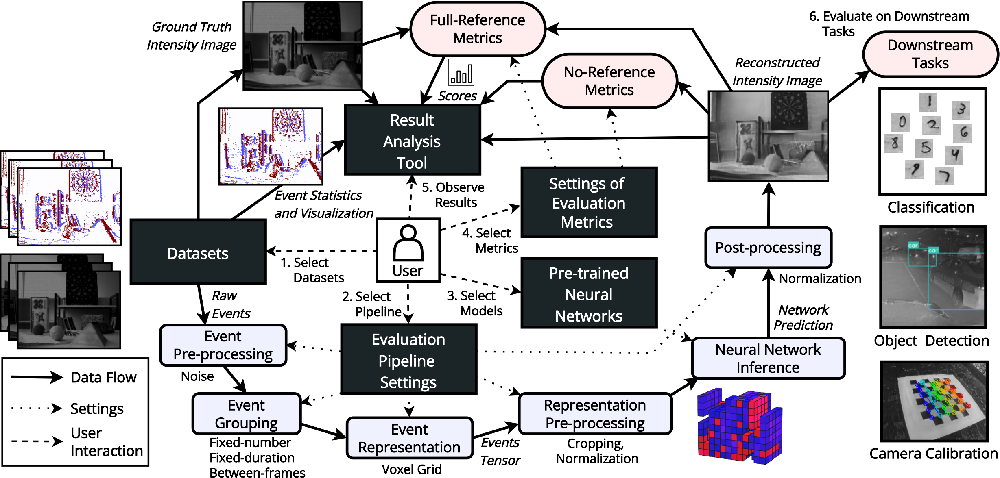

I am a senior computer vision engineer at HAVELSAN
and a Ph.D. candidate at Hacettepe University,
working on event-based vision
with Assoc. Prof. Erkut Erdem
and Assoc. Prof. Aykut Erdem.
Selected Publications

arXiv, 2023
Abstract Project page Paper Code Video Bibtex
Event-based cameras are becoming increasingly popular for their ability to capture high-speed motion with low latency and high dynamic range. However, generating videos from events remains challenging due to the highly sparse and varying nature of event data. To address this, in this study, we propose HyperE2VID, a dynamic neural anetwork architecture for event-based video reconstruction. Our approach uses hypernetworks to generate per-pixel adaptive filters guided by a context fusion module that combines information from event voxel grids and previously reconstructed intensity images. We also employ a curriculum learning strategy to train the network more robustly. Our comprehensive experimental evaluations across various benchmark datasets reveal that HyperE2VID not only surpasses current state-of-the-art methods in terms of reconstruction quality but also achieves this with fewer parameters, reduced computational requirements, and accelerated inference times.
@article{ercan2023hypere2vid,
title={{HyperE2VID}: Improving Event-Based Video Reconstruction via Hypernetworks},
author={Ercan, Burak and Eker, Onur and Saglam, Canberk and Erdem, Aykut and Erdem, Erkut},
journal={arXiv preprint arXiv:2305.06382},
year={2023}
}
Computer Vision and Pattern Recognition (CVPR) Workshops, 2023
Abstract Project page Paper Code Demo Poster Bibtex
Event cameras are a new type of vision sensor that incorporates asynchronous and independent pixels, offering advantages over traditional frame-based cameras such as high dynamic range and minimal motion blur. However, their output is not easily understandable by humans, making the reconstruction of intensity images from event streams a fundamental task in event-based vision. While recent deep learning-based methods have shown promise in video reconstruction from events, this problem is not completely solved yet. To facilitate comparison between different approaches, standardized evaluation protocols and diverse test datasets are essential. This paper proposes a unified evaluation methodology and introduces an open-source framework called EVREAL to comprehensively benchmark and analyze various event-based video reconstruction methods from the literature. Using EVREAL, we give a detailed analysis of the state-of-the-art methods for event-based video reconstruction, and provide valuable insights into the performance of these methods under varying settings, challenging scenarios, and downstream tasks.
@inproceedings{ercan2023evreal,
title={EVREAL: Towards a Comprehensive Benchmark and Analysis Suite for Event-based Video Reconstruction},
author={Ercan, Burak and Eker, Onur and Erdem, Aykut and Erdem, Erkut},
booktitle={Proceedings of the IEEE/CVF Conference on Computer Vision and Pattern Recognition},
pages={3942--3951},
year={2023}
}